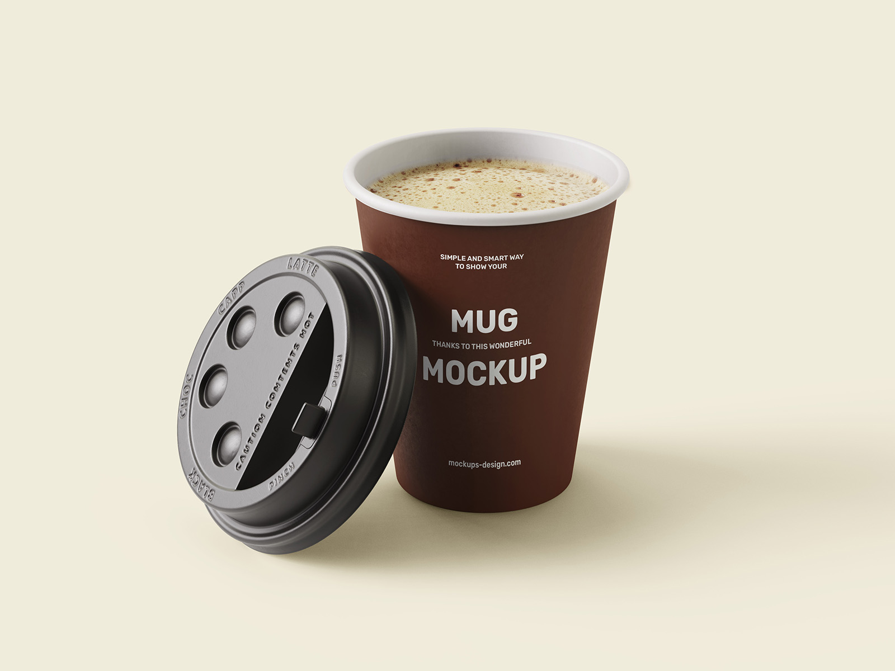
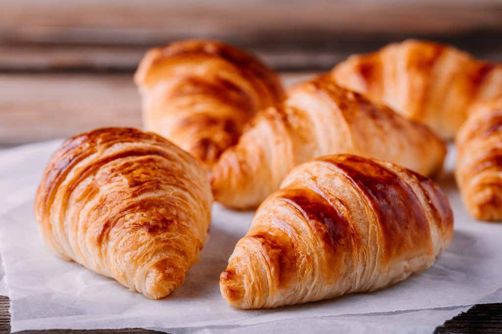

O MELHOR CAFÉ DE NITERÓI
No coração de Niterói, nosso café é mais do que uma bebida, é uma experiência. Selecionamos grãos premium de origem única, preparados com maestria para oferecer uma explosão de sabor em cada gole. Com um ambiente acolhedor e uma equipe apaixonada, somos o destino ideal para os amantes de café que buscam qualidade, autenticidade e aquele toque especial. Venha nos visitar e descubra por que somos o café preferido da cidade.
SOBRE NÓS
PRODUTOS
Mockup-coffee
Se deleite com nosso novo lançamento, o Mockup-coffe, térmico e descartável


Cold Brew
Cold Brew é um café suave e gelado, preparado por infusão lenta em água fria por até 24 horas. Seu sabor naturalmente doce e baixa acidez fazem dele a escolha perfeita para os dias quentes.
O Croissant
O croissant é um clássico pão francês, leve e folhado, conhecido por sua textura amanteigada e crocante. Sua forma de meia-lua e camadas delicadas o tornam uma opção irresistível para o café da manhã ou lanche.
